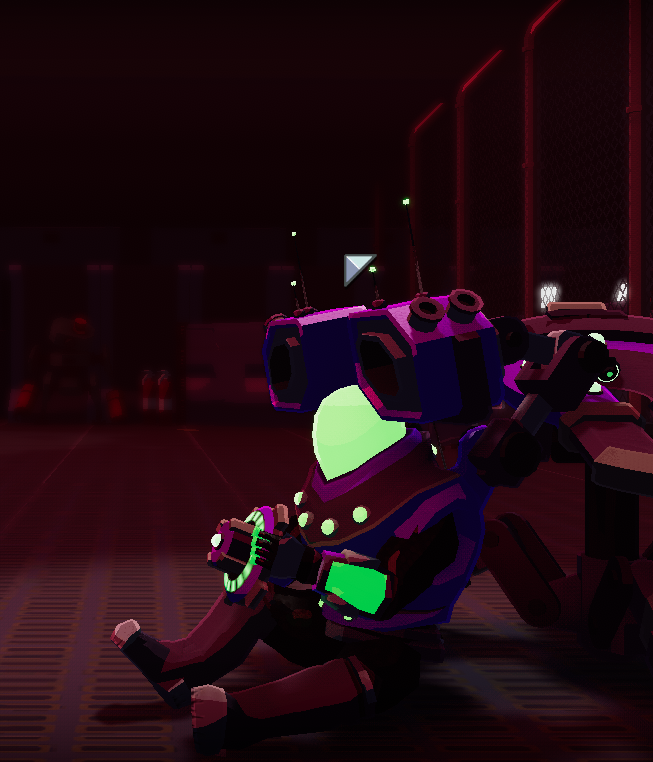
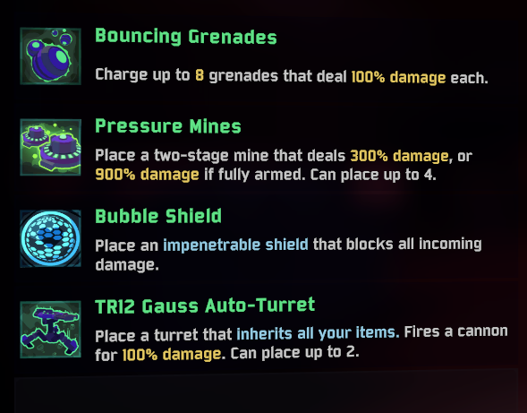

Sobre
Engineer é um pequeno astronauta meio maquina meio humano que tem como misão derrotar mytir(O mostro da lua) com funçao de salvar o que resta da humanidade, apos a destruição de parte da lua e do surgimento de Mytir.
Engineer no lobby de escolha de personagens
Traços de Personalidade
- Calculista
- Frio
- Estrategista
- Genial
Habilidades
Pelo que podemos ver desta personagem, ele é alguem que confia mais nas suas maquinas que em pessoas, sendo assim é uma personagem que utiliza duas torres como fonte de ataques consecutivos para apoiar seus ataques principal que é atirar granadas aos inimigos, a qual demora alguns segundos a carregar na totalidade.
